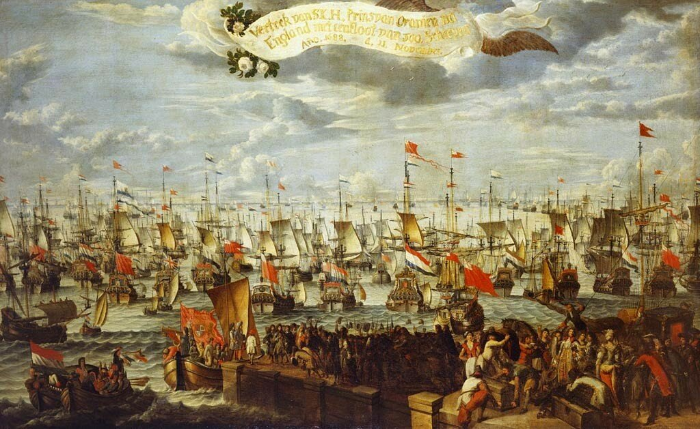

' 'Aubrey? Oh, yes,' said the Admiral, running his dry tongue over his dry lips, like a parrot, 'I know all about him. I have not met him, but I talked about him to people at the club and in the Admiralty, and when I came home I looked him up in the Navy List. He is a young fellow, only a master and commander, you know -' 'Do you mean he is pretending to be a captain?' cried Mrs Williams, perfectly willing to believe it.
'No, no,' said Admiral Haddock impatiently. 'We always call commanders Captain So-and-So in the Navy. Real captains, full captains, we call post-captains - we say a man is made post when he is appointed to a sixth-rate or better, an eight-and-twenty, say, or a thirty-two-gun frigate. A post-ship, my dear Madam.' 'Oh, indeed,' said Mrs Williams, nodding her head and looking wise. 'Only a commander: but he did most uncommon well in the Mediterranean.
— Обри? Ну как же, — отвечал адмирал, поводя головой, словно попугай. — Я знаю о нем все. Сам я его не встречал, но говорил о нем с людьми в клубе и в Адмиралтействе и когда приехал домой, то заглянул в адмиралтейский справочник. Он молодой человек, по чину всего лишь штурман и командир…
— Так он только делает вид, что он капитан? — воскликнула миссис Уильямс, всей душой желавшая, чтобы так оно и было.
— Да нет же, — нетерпеливо оборвал ее адмирал. — У нас на флоте всегда называют командиров кораблей капитан такой-то и такой-то. Настоящих капитанов, полных капитанов мы называем капитанами первого ранга. Капитан первого ранга должен командовать кораблем шестого или более высокого класса, скажем двадцативосьми — или тридцатидвухпушечным фрегатом. Каков ранг корабля, таков и ранг капитана, мадам.
— Ах вот как, — вставила миссис Уильямс, с умным видом кивая головой.
O'Brian P. Post Captain — London: Fontana, 1975. (О'Брайан П. Хозяин морей: Капитан первого ранга. — М.: «Амфора», 2006 Пер. Виктор Кузнецов)

I.
That the Admiral and Commander in Chief of His Majeſty's Fleet have the Rank of a Field Marshal of the Army.
II.
That the Admirals, with their Flags on the Main-Top-mast-head, have Rank with generals of Horse and Foot.
III.
That Vice-Admirals have Rank as Lieutenant-Generals.
IV.
That Rear - Admirals have Rank as Major-Generals.
V.
That Commodores with Broad Pendants, have Rank as Brigadier-Generals.
VI.
That Captains Commanding Post-Ships, after three Years from the Date of their first Commifssion for a Post-Ship, have Rank as Colonels.
VII.
That all other Captains, Commanding Post-Ships, have Rank as Lieutenant-Colonels
VIII.
That Captains of His Majesty’s Ships or Vessels, not taking Post, have Rank as Majors.
IX.
That Lieutenants of His Majeſtfs Ships have Rank as Captains.
X.
That the Rank and Precedence of Sea-Officers, in the Classes above-mentioned, do take Places according to the Seniority of their respective Commissions as Sea-officers.
XI.
That Post-Captains, Commanding Ships or Vessels that do not give Post, rank only as Majors, during their Commanding such Vessels.
XII.
That nothing in this Regulation shall give any Pretence to any Land officer to command any of His Majesty's Squadrons or Ships; nor to any Sea-officer to command at Land ; nor shall either have a Right to demand the Military Honours due to their respective Ranks, unless such officers are upon actual Service.
VI
Капитаны пост-кораблей через три года после их первой комиссии на пост-корабль, соответствуют рангу полковника.
VII
Все другие капитаны, которые командуют пост-кораблями, соответствуют рангу подполковника.
VIII
Капитаны кораблей или судов его величества, не вступившие в должность (not taking Post), приравнены к майорам.
IX
Лейтенанты кораблей его величества приравнены к сухопутным капитанам. (Не отсюда ли пошла старая морская присказка, что офицер на флоте на ступень выше своего сухопутного собрата: «капитан на флоте как майор в пехоте»?)
…
XI. Пост-капитаны, которые командуют кораблями или судами, не являющимися пост-кораблями, в период своей службы на таких кораблях, соответствуют только майору.
Commanders of Fireships, Sloops, Yachts, Bomb-Vessels, Hospitals, Store-ships, and other vessels, though they may have commanded Ships of Post before, shall be commanded by Junior Captains in Ships of Post, while they keep Company together..; but without Prejudice to their Seniority afterwards.
Командиры брандеров, шлюпов, яхт, бомбардирских судов, госпиталей, кораблей-складов и других судов, даже если они является бывшими капитанами пост-кораблей, при совместном плавании подчиняются младшему из капитанов пост-кораблей;… однако это положение не распространяется на их старшинство после окончания кампании.